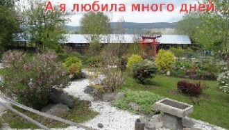

Красивы руки у тебяТы мне сказал однаждыОни как птицы-два крылаДля женщин-это важноКогда меня обнимешь тыТак сердце замирает
Твои любимые чертыТак для меня необходимыИ лишь о том прошу судьбу
Ты спишь, а на улице ветерТы спишь, а на улице дождьЗа наши дела только мы лишь в ответе,Надеюсь, ты это поймешь
Ждет в печали и унынье одинокая скамья,
Клены, вязы и осины - вот и все ее друзья,
Только ягоды рябины замерзают на снегу,
Под музыку осенних холодовТак хочется побыть с тобойИ не казаться всем такой больной,Не слушать неумелых докторов...
Надежда!Имя гордое твоё
Я пронесу сквозь все невзгоды и печали,
И те мелодии,что нам с тобой звучали,
Воспламеняют сердце вновь моё.
Я не пытаюсь для тебя воскреснуть сноваЯ знаю чувства все мои, давным-давно мертвыМоя любовь утихла с полусловаТы не дала дожить ей до весны
Сплю теперь по ночам и уже не разбужен звонкамиИ уже не боюсь, потерять иль потерянным бытьМне тебя удалось отпустить, только мучает память
03.10.2014г.
08.45ч.
Подскажите, где находится любовь,
Как определить ее на расстоянии?
А ты попробуй и услышишь,Того, что я не говорю,А ты попробуй и увидишь,Где нет меня- там я стою.Ты ощути, почувствуй кожей,
Подари мне листопад, словно легкой шалью,Пусть на плечи упадет осень золотая.Подари мне звездопад, как в волшебной сказке,
Прости меня, что причинила боль.Такую боль, что страшно и представить.Теперь хочу я просто быть с тобой,И все проблемы за стеной оставить.
Не держи ты меня у порога,Все равно в твоё сердце ворвусь,Безразлично так смотришь, так строго,Но тебя я совсем не боюсь.

23.09.2014г.
11.10ч.
А я любила много лет
И прятать чувства не умела,
И до сих пор обиды след
Вот и встретились мы на краю,
Пусть ночь подарит страсть и вдохновенье,И растворится в нежности душа,
За то, что рядом ты,Негромко, но сердечноСпасибо всем святым – Я их должник навечно.